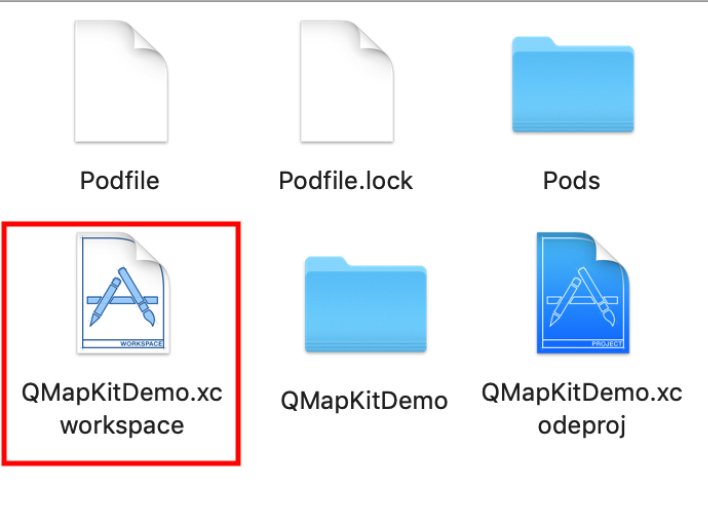

自动部署
用户使用腾讯地图 iOS SDK 支持项目开发时，可以通过 Cocoapods 自动部署将 SDK 添加到工程当中。用户需要8.0版本以上的 Xcode 进行开发。自动部署目前仅支持 3D 地图 iOS SDK 4.2.6.2 及以上版本。
1. 获取Cocoapods
CocoaPods 是一种支援 Swift 和 Objective-C 项目的第三方库资源管理器，用户可通过 Cocoapods 获取腾讯地图 iOS SDK。
安装 Cocoapods
配置 ruby 的软件源
由于默认的 ruby 的软件源（
https://rubygems.org/）被墙阻拦导致 CocoaPods 安装失败，因此需要更新一下 ruby 的源。依次执行如下命令：#(查看当前ruby的源) gem sources -l #(移除当前ruby的源) gem sources --remove https://rubygems.org/ #(设置当前ruby源为淘宝源) gem sources -a https://ruby.taobao.org/ #(再次查看当前ruby的源) gem sources -l完成上述命令后，显示如下文字则表示更新成功
*** CURRENT SOURCES *** https://ruby.taobao.org/升级 gem
将 gem 的版本更新到最新确保 Cocoapods 安装成功
sudo gem update --system安装 Cocoapods
若您的 OS X 为10.11及以前的版本，请使用一下命令安装 Cocoapods：
sudo gem install cocoapods pod setup若您的 OS X 版本大于10.11，请使用一下命令安装 Cocoapods：
sudo gem install -n /usr/local/bin cocoapods pod setup注：Cocoapods 安装过程可能会耗时较长，也有可能受网络的状况导致失败，如果安装失败请多次尝试
2. 通过 Cocoapods 安装 SDK
1、创建 Podfile
在当前工程文件 (.xcodeproj) 所在文件夹下创建一个名为 Podfile 的文件。Podfile 内容如下：
platform :ios, "8.0" #手机系统版本
target "QMapKitDemo" do #工程的名字
pod 'TencentMap-SDK' #地图SDK
end
#当有多个target时，不同的target也需要各自设置
#target "QMapKitDemo1" do #工程的名字
# pod 'TencentMap-SDK' #地图SDK
#end
#target "QMapKitDemo2" do #工程的名字
# pod 'TencentMap-SDK' #地图SDK
#end
2、安装SDK
#用于保证本地地图相关 SDK 为最新版
pod repo update
#安装 SDK
pod install
3、命令执行成功后，会生成 .xcworkspace 文件，打开.xcworkspace 文件以启动工程（注意：此时不能同时开启.xcodeproj文件，示例：

3. 升级 SDK
若已通过自动部署安装了腾讯地图 iOS SDK，想要更新到最新版本，可在 Podfile 文件所在目录下执行以下指令：
pod repo update #用于保证本地地图相关SDK为最新版
pod update
4. 安装指定版本 SDK
自动部署目前仅支持地图 iOS SDK 4.2.6.2及以上版本，使用指定版本 SDK，需修改 Podfile 文件，示例：
platform :ios, "8.0" #手机系统版本
target "QMapKitDemo" do #工程的名字
pod 'TencentMap-SDK', '~> 4.2.6.2' #在此修改或添加 3D SDK 版本号
end
然后执行命令：
#用于保证本地地图相关 SDK 为最新版
pod repo update
#安装 SDK
pod install